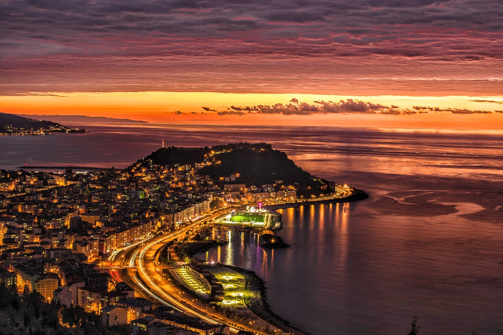

|

Genel Bilgi
"Kiraz ve Fındık diyarı..."
Kirazın anayurdu Giresun dur. Bu nedenle ismini de Yunanca kiraz anlamına gelen Kereasus veya Keresea kelimelerinden alınmıştır. Kiraz Giresun da önemini büyük ölçüde yitirmiş olup, yerini artık fındığa bırakmıştır.
Giresun Doğu Karadeniz Bölgesinde M.Ö. 8. yy da kurulmuş koloni bir kenttir. Konumu kültürel değerleri tarihi eserleri ile eşsiz güzelliklere sahip bir ildir.
Giresun bir sahil kenti olması nedeniyle turizm açısından fazlasıyla artan bir öneme sahiptir.
Sezon
Giresun Dağlarının kıyıya paralel olarak uzanışı, il toprakları üzerinde iki farklı iklim bölgesi oluşmasına neden olmuştur. Karadeniz kıyılarında ılık ve yağışlı iklim sürer. En çok yağış, ekim ve Kasım en az yağış ise Mayıs ve Haziran aylarında görülür. Deniz en yüksek sıcaklık değerine Temmuz ve Ağustos aylarında ulaşır. Bu sebeple yaz ve bahar aylarında Giresun bir başka güzel olur.
Tarih
Giresun üzerinde çok az arkeolojik araştırma yapılmıştır. Miletliler tarafından M.Ö. VIII.yy da bir koloni kent olarak kurulmuştur. Aynı yıllarda Doğu Karadenizde kurulan 5 büyük koloniden birisidir. Şehrin ilk kuruluş yeri batlama deresi ağzındaki Çıtlakkale dir ve bu dönemde Kerasus adıyla anılmıştır.
Giresun M.Ö.183 yılında Pantos hakimiyetine geçti. Pantos kralı 1. Phamakes şehri şimdiki kale ve çevresinde yeniden kurdu. Giresun bu yıllarda Pharnakia olarak anıldı. M.Ö. 63 yılında Roma hakimiyetine giren şehir, 1204 tarihinde Trabzon Rum imparatorluğuna bağlandı. 1461 yılında ise Osmanlı İmparatorluğuna katıldı. 1923 yılında il oldu.
Yeme İçme
Giresun denilince akla karalahana ve hamsi gelir. Bunun yanında mısır unundan yiyecekler yapılır. Yemeklerden bazıları; Karalahana Çorbası, Karalahana Diblesi, Isırgan Püresi, Mısır Ekmeği, Fasulye Turşusu, Kiraz Duzlaması ve Pezik Mıhlamasıdır.
Alışveriş
Giresun dan fındık almadan, Peştamal ve kazancılar çarşısındaki küçük el yapımı hediyelik eşyalardan almadan dönmeyin.
Doğa Sporları
Yörede en yaygın spor yüzmedir. Yelken, yamaç paraşütü ve kampçılık da yapılmaktadır. Doğa sporları için çok uygun bir coğrafyaya sahip olan Karadeniz Bölgesindeki yaylalarda çim kayağı kış mevsiminde kar kayağı, avcılık ve trekking yapılmaktadır.
Komşuları
Ordu, Gümüşhane, Trabzon, Sivas.
Özel Günler
Giresun'un en eski festivali 20-30 mayıs tarihleri arasında yapılan Uluslararası Giresun Aksu festivalidir. Ayrıca Temmuz ayı içinde Kümbet, Bektaş, Sis dağı, Karaovacık yaylalarında onbinlerce insanın katıldığı yayla şenlikleri yapılmaktadır.
|